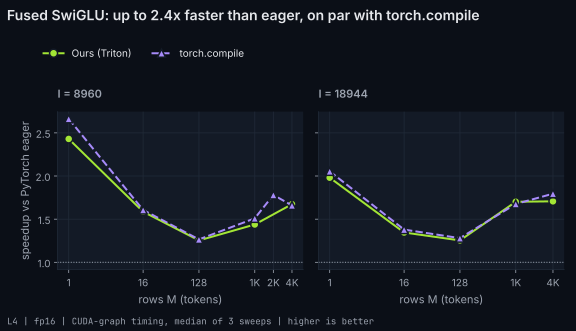

Fused SwiGLU
The MLP activation is silu(gate) * up. With a merged gate/up projection the kernel reads both halves of one tensor in place and writes the product in one pass: 3 bytes moved per 2 read, the minimum possible.
Kernel
kernels/swiglu.py
@triton.jit
def _swiglu_kernel(
g_ptr, u_ptr, out_ptr,
stride_g, stride_u, stride_out,
I,
BLOCK: tl.constexpr,
):
row = tl.program_id(0)
cols = tl.program_id(1) * BLOCK + tl.arange(0, BLOCK)
mask = cols < I
g = tl.load(g_ptr + row * stride_g + cols, mask=mask, other=0.0)
u = tl.load(u_ptr + row * stride_u + cols, mask=mask, other=0.0)
gf = g.to(tl.float32)
act = (gf * tl.sigmoid(gf)).to(g.dtype) # silu in fp32, rounded like F.silu
tl.store(out_ptr + row * stride_out + cols, act * u, mask=mask)L4

| shape | triton (us) | eager (us) | compile (us) | speedup vs eager | triton % peak bw |
|---|---|---|---|---|---|
| M=1, I=8960 | 1.1 | 2.7 | 1.0 | 2.44x | 16% |
| M=16, I=8960 | 3.5 | 6.4 | 3.4 | 1.84x | 82% |
| M=2048, I=8960 | - | 783.6 | 440.1 | - | - |
| M=128, I=8960 | 19.2 | 26.8 | 19.2 | 1.40x | 119% |
| M=1024, I=8960 | 195.3 | 310.0 | 196.1 | 1.59x | 94% |
| M=4096, I=8960 | 932.0 | 1559.8 | 878.8 | 1.67x | 79% |
| M=1, I=18944 | 1.1 | 2.6 | 1.0 | 2.34x | 34% |
| M=16, I=18944 | 6.0 | 8.8 | 5.8 | 1.47x | 101% |
| M=128, I=18944 | 38.5 | 54.1 | 38.7 | 1.40x | 126% |
| M=1024, I=18944 | 486.9 | 826.4 | 493.6 | 1.70x | 80% |
| M=4096, I=18944 | 1941.1 | 3300.7 | 1839.8 | 1.70x | 80% |
Profile on L4
| case | kernel | GPU time (us) |
|---|---|---|
| swiglu_M4096 | _swiglu_kernel | 924.8 |
Times are CUDA-graph medians over 3 sweeps with rotating buffers (working set at least 4x L2). * = more than 10% spread between sweeps.